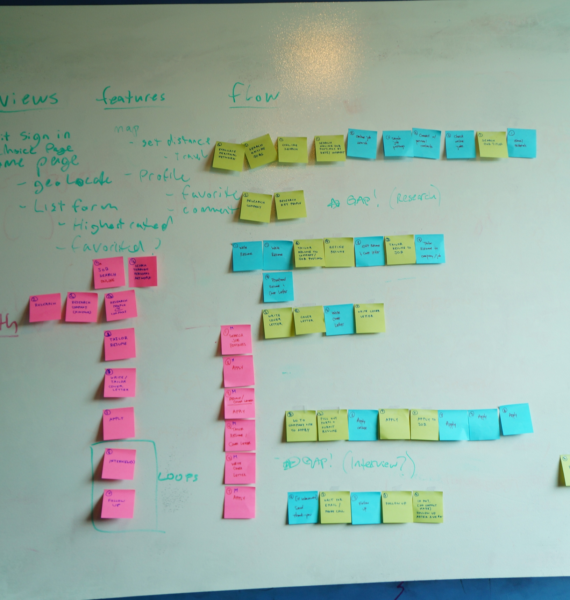
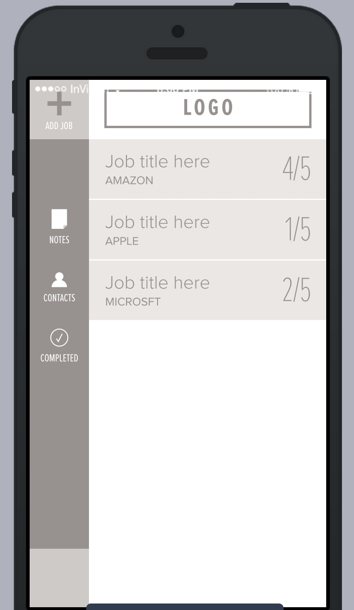
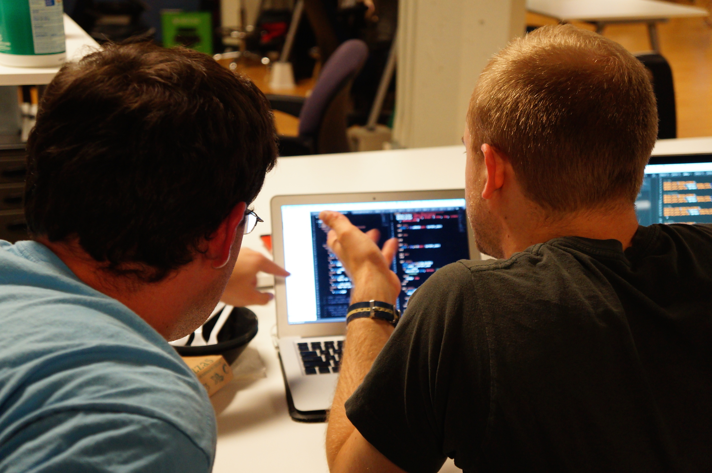

Bring ORDR to your job search process.
WHO ARE WE?
UX/UI Developers
- Gabe Pelegrin
- Mark Palfreeman
Rails Developers
- Alex Lien
- Kevin Staiger
- Eric Nilsen
The Problem
Our users want a better way to manage their job search process.
WHAT IS IT?
ORDR is a dashboard web app helping job seekers track:
- Jobs they plan to apply to
- Steps to take for applying to a job
- How far they've progressed in the application process
1. Problem Definition & UX Research

Audience data gathering, affinity diagraming, user-flow
2. Wireframes & User Testing

Guerilla user testing wireframed prototype at HIVE conference, user analyze feedback
3. Development & Teamwork

Challenges
- Finding a better integrated work rhythm
- Set naming conventions with the ruby team
- Rails will re-class and double class, so watch out
- That darn footer...
- Make sure to set appropriate time to refactor and clean things up